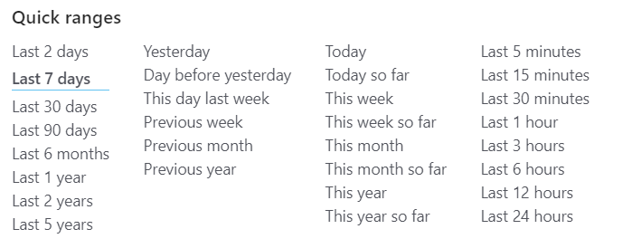

平时开发监控系统时免不了与时序数据库的查询打交道，在查时序数据库时 时间范围 是必不可少的条件，所以在查询的UI展示上通常会将时间范围作为一个独立的组件来让用户交互。
时间范围通常会展示为两种形式：相对时间和绝对时间。对于监控系统来说，日常观察指标、建立看板基本都是使用相对时间，因为使用绝对时间的话一是不能及时更新，二是容易引发慢查询。而绝对时间的使用场景一般是定位具体问题。
在我们的监控前端里主要使用相对时间的地方有两个，一是adhoc查询，另一个是看板。在这两处需求里都需要对相对时间序列化，前者用来分享查询链接，后者用来保存看板配置。下面就谈谈如何序列化相对时间。
使用key来映射
这是一开始监控里使用的方式，就是通过一些预定义的key（yesterday, today, thisweek等）来保存相对时间范围，前端在展示时需要额外写死的 Label Map 和 Duration Map。1
2
3
4
5
6
7
8
9
10
11
12
13const LabelMap = {
yesterday: '昨天',
today: '今天',
thisweek: '这周',
// and so on..
};
const DurationMap = {
yesterday: () => [moment().subtract(1, 'day').startOf('day'), moment().subtract(1, 'day').endOf('day')],
today: () => [moment().startOf('day'), moment().endOf('day')],
thisweek: () => [moment().startOf('week'), moment().endOf('week')],
// and so on..
}
这种方式很简单但不灵活，如果需要一个新的时间段就必须改这两个Map才行。而且如果用户有一些特殊的相对时间的话，这种方案就行不通了。
使用结构化数据
为了灵活性考虑，我们可以使用对象来保存相对时间，这里我们需要先理解相对时间由什么组成。
相对时间的抽象
在项目里我们一般用的时间段都是由一个开始点和一个结束点构成，其中一个相对时间点是由一连串计算产生的，这里的计算我们可以分为两类：偏移和区间首尾。对应的moment方法为1
2
3
4
5
6
7// 偏移
moment().add(1, 'hour');
moment().subtract(1, 'day');
// 区间首尾
moment().startOf('hour');
moment().endOf('day');
实现
对应的数据结构如下
1 | type Unit = 's' | 'm' | 'h' | 'd' | 'w' | 'M' | 'y'; |
另外只要根据这个数据结构实现一个展示Label的函数和一个计算Duration的函数就行了。
结构化数据提供了很好的灵活性但暴露了几个缺点：
- 展示Label的函数不好写，尤其是对于两步以上的计算就得写很多特殊判断，比如 上周 我们的数据长这样(对象写起来太长，用moment表示一下)
[moment().sutract(1, 'w').startOf('w'), moment().sutract(1, 'w').endOf('w')]，反过来将该对象格式化就得写很多判断代码才行。 - 为了方便使用，肯定是需要快速筛选，无论这个列表放在前端还是后端都需要写一大堆代码（快速筛选如下）
 - 对象不太方便放到query里，比如在我们监控看板里有一个功能，可以让用户在query里带上时间参数来覆盖看板里的默认配置，如果这里是对象的话就不太方便了。
使用相对时间表达式
如果能用表达式来表示上面的结构化数据的话不就能解决以上几条缺点了吗？
相对时间表达式
在这点上Grafana已经提供了一个可用的雏形，我在其语法基础上重写了逻辑，增加了容错性以及语法特性，独立出来了一个库（主页）。这个表达式是基于上一节结构化数据实现的，但是能更简单明了。比如（取自examples）
now - 12h: 12 hours ago, same asmoment().subtract(12, 'hours')-1d: 1 day ago, same asmoment().subtract(1, 'day')now / d: the start of today, same asmoment().startOf('day')now \ w: the end of this week, same asmoment().endOf('week')now - w / w: the start of last week, same asmoment().subtract(1, 'week').startOf('week')
如何解决结构化数据的缺陷
如何解决格式化问题
将表达式格式化的话特殊区间就不需要写代码进行判断了，只需像第一种方式里一样将标准格式的表达式映射到相应的文本上就行了。比如
1 | const LabelMap = { |
当然在处理 前x小时, 前x天 这种情况还是需要写一些判断，和上节的处理差不多，如下
1 | // const start, end = ... |
解决剩下两个问题
值一旦变成普通字符串的话这两个问题也就迎刃而解了。
时区问题
区间首尾的计算是基于时区的，比如now/d, 用户期望的通常是他所在地区一天的开始时间（当然也不排除想通过另外时区的时间查数据的情况）。如果计算相对时间实在客户端的话，浏览器其实已经帮我们设定好了正确的时区，但是服务端就不一样了，它只能拿到服务器系统所在时区的时间。
所以考虑服务端计算相对时间的需求（监控看板里就有类似需求：通过看板组件id直接调用后端接口拿到数据），客户端在调用这些接口时需要带上时区信息。服务端的处理代码如下
1 | import parse from 'rte-moment'; |
结语
在监控项目里的时间组件基本参照了Grafana的时间组件，不得不说其在监控方面还有很多值得学习的地方。
另外该项目除了typescript外还用rust练手写了一遍，rust给我印象最深的一点是整套项目构建、文档生成、依赖管理的工具非常好用，上手就可以专心写代码了。